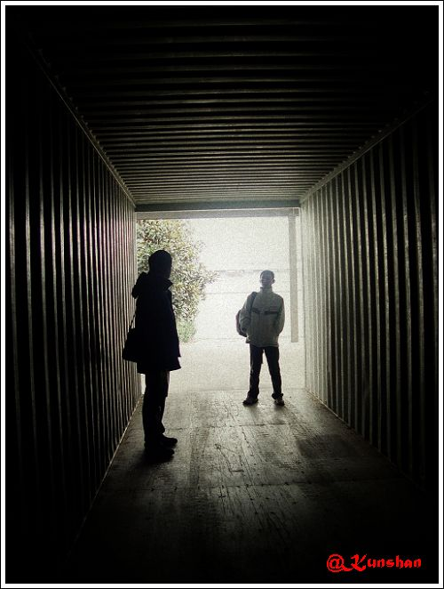

敬业的寒冷 @ Jan 14, 2008
回到南京时看到树丛和屋顶薄薄的积雪，喜出望外。
可是电视新闻频频报道着各个高速上的连环撞车祸，触目惊心。
站在MAERSK的集装箱躲避寒风，可惜领导看不见那个惨状。
一个人能始终保持敬业精神，蛮难的，不是吗？
但为了某种目的敬业或许还容易一些，不过目标也是不断变化的，那我们究竟在为什么工作？
有时觉得是为自己；
有时觉得是为生活；
有时觉得是为父母和家庭；
有时觉得是为爱人；
有时...却又觉得是为领导工作？！

14 Responses to “敬业的寒冷”
2008-01-14
当我们在欣赏皑皑白雪无限美景的时候，有的人却在为了城市干道的通畅，挥汗如雨的清扫着积雪。他们有心情停下来也欣赏片刻吗？
2008-01-14
敬业是一种态度，抑或精神。不为别的，只为对得起自己和做的事情。为机会总要迷失。
人生如花事一场，或繁华或平淡
绚烂可能就是衰败的序幕，剩下的唯有回忆
敬业是对自己的尊重，对他人的负责
2008-01-14
职业道德是从业者最基本的素质，我在医院工作，早上5：30起床，6：10离家，不管是多大的雪还是节假日只要我当班，7：00到医院，按规定应该5：30下班，不过，我们经常7，8点都不能离开医院，患者是第一位的，患者病情稳定以后我们才可以离开，没有加班费，也不做给别人看，就是责任和爱心。
2008-01-15
不过是图个良心平安罢了，这样晚上能睡个安稳觉。
2008-01-15
啊哦~~我们加班也是没有加班费的，下班时间也走不了，基本上都会超出工作时间停留在办公室里。
我就不相信一个人“喝西北风”却还能仅凭责任与爱心敬业？能支撑多久？好些人和领导谈收入难以启齿，客观上讲付出劳动获得薪水，天经地义，可是现在公司里的“法”就是领导，压根与劳动法无关。
2008-01-15
Hello, 同行。最近时常考虑这个问题，有时想是为了测试自己最大限度的能力在哪里。。。
2008-01-15
喝西北风，你的收入已经属于top 10%了，先做好本职提高自己的业务能力，再谈待遇，如果对现在的单位和工资不满意，可以选择离开，而不是发牢骚和消极待工，选择自己喜欢的职业和自己喜欢的单位是对自己也是对社会负责。
2008-01-15
美国如何？OVERTIME 工作没有工资的员工多了，公司和你签约之前就会说明，一般SALARIED（年薪制）都不pay overtime，而hour by hour 的员工是付加班费的，不过，福利待遇没有正式员工好，患者永远是第一位的，如果对现在的薪水和工作满意，我是无所谓加班的。
2008-01-15
Well, 事前应该讨价还价没错，一矣签约，就应尽力完成。鬼子的敬业值得我们效仿，即便是夜半的清洁工或清晨的扫雪、拾落叶工人，都干得心情愉快，无可挑剔。他们工资不高，心态平和。
敬业是态度，与收入无关。
2008-01-16
在我访问您的友好链接:漂流瓶子的一亩田时，我点击了首页的一组图片，突然跳出一个中奖的页面，说是我是第999，999位访客，祝贺我赢取轿车，整个页面都是英文的，点了领取奖品的按钮后，让我把自己的地址信息填上，还让用英文填上，中奖的网址是：http://imageshack.us/，我不相信天上会掉馅饼，可是那博客是以ＭＳＮ为平台的．实在是让人费解，外国人也喜欢骗人吗，您可以跟我说说是怎么回事吗？
2008-01-16
那个中奖，不是我胡说，今天早上真遇到这事了，全是英文网页，我又看不懂，勉勉勉强强用自己仅有的菜鸟水平，把地址用英语写了上去，还真像那么回事，就全当是闹着玩吧，反正又没套我的钱。
2008-01-16
shui he feng shui mafan
2008-01-17
记得有曾经有一个大年三十，从温暖的办公室冲到工厂，和同事趴在一个马士基大柜里，用工厂里拣来的木条钉那个柜子地板的缝隙。也许算是为生活，也为了自己吧，其实什么敬业，没的选择而已。若是一个柜子能让你一生衣食无忧，也许中国会有一小半人会愿意放弃外面的一切躲进柜子里过自己的下半生吧。
2008-01-21
abidingstar:
呵呵，顶多就是在你电脑里下载个病毒或者收到一些广告的EMAIL。不要以为只有中国人骗人，有些技术含量的骗术都是外国人发明的，连骗人都是外国骗子比中国骗子敬业。
Leave A Reply
存档只读，评论已关闭。